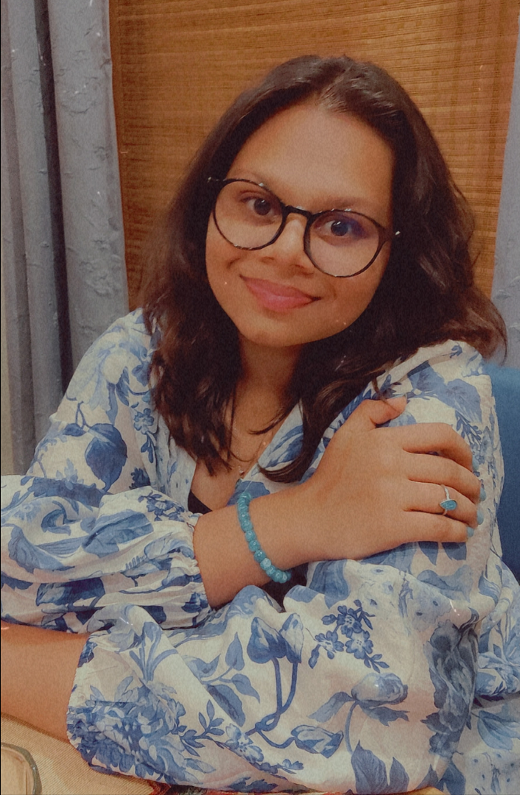

Kasturi S Mule

Education
- Scored 95.6% in 10th CBSE boards from Apeejay School, Nerul.
- Scored 93% in 12th CBSE boards from Apeejay School, Nerul.
- Currently in the Third Year of B.Tech course in Electrical Engineering from Veermata Jijabai Technological Institute.
Work Experience
- Event Head of ECell VJTI's nationally conducted EQuiz.
Skills
- Full stack web development.
- Python programming.
- C programming language
- C++ programming language
Certifications